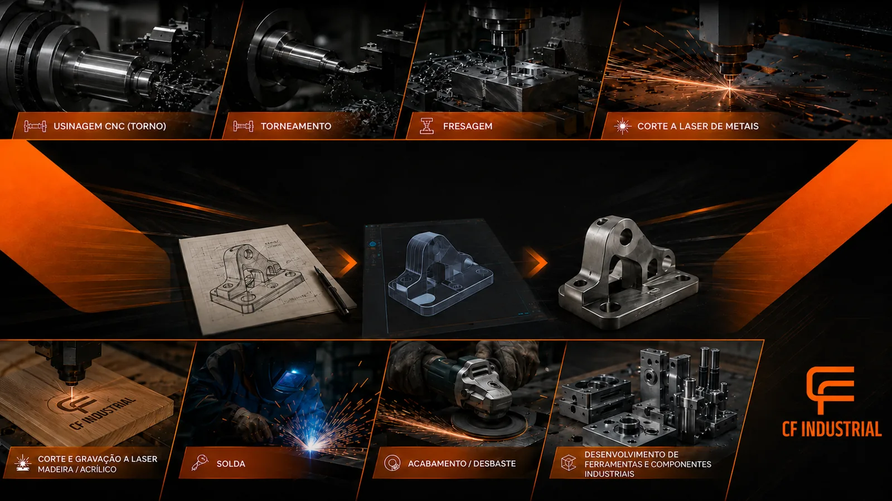
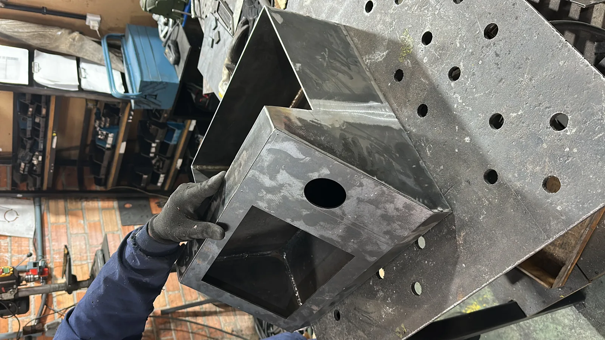
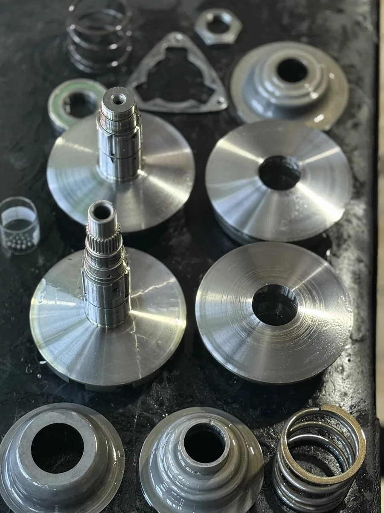
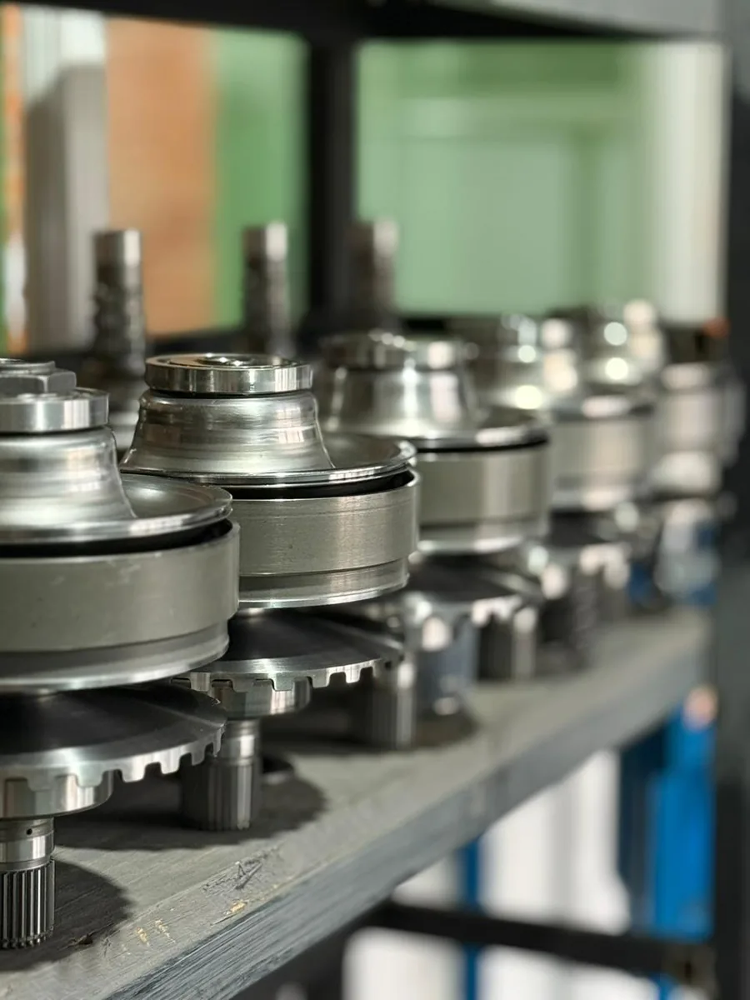

01
Metal laser cutting
Sheet metal and component cutting for bases, brackets, flanges, panels, parts and structures.
View service
Laser cutting, machining, manufacturing, welding, 3D printing, tooling and custom solutions for a wide range of industrial needs.
From a simple part to a custom fixture, CF Industrial combines manufacturing processes to meet each project's requirements.
Sheet metal and component cutting for bases, brackets, flanges, panels, parts and structures.
View serviceCutting and engraving MDF, wood, acrylic and compatible materials for technical and commercial projects.
View serviceManufacturing and reconditioning components from drawings, samples or maintenance requirements.
View serviceProcesses for shafts, bushings, flanges, housings, surfaces and industrial components.
Learn moreJoining, assembly, reinforcement and repair of industrial components and assemblies.
View servicePrototypes, support parts, jigs and components for development and validation.
View serviceDevelopment of tools, jigs and fixtures adapted to the customer's process.
View serviceTools, machines, fixtures, reconditioning and solutions for automatic transmission specialists.
Explore solutionsWe identify the problem, define the right process and turn the requirement into a solution that can be manufactured.
Understanding the requirement and intended use.
Defining dimensions, geometry and requirements.
Selecting suitable manufacturing methods.
Execution according to the agreed scope.
A finished part, component, fixture or assembly.
Sheet metal cutting for maintenance parts, machine components, bases, brackets, flanges, panels and projects based on drawings.


CNC machining, turning and milling can be used to manufacture new components, replacements and solutions for industrial maintenance.
Special tools, fixtures, machines, parts and services for mechanics, specialist workshops, repairers and automatic transmission businesses.
Solutions for disassembly, assembly, inspection, reconditioning and testing.
Applications for CVTs, torque converters, valve bodies and other requirements.

Located at Rua Doutor Murici, 7380 B, São José dos Pinhais, we serve Curitiba, its metropolitan area, Paraná and other regions depending on the project.
Send your project details and CF Industrial will assess the most suitable process for your needs.